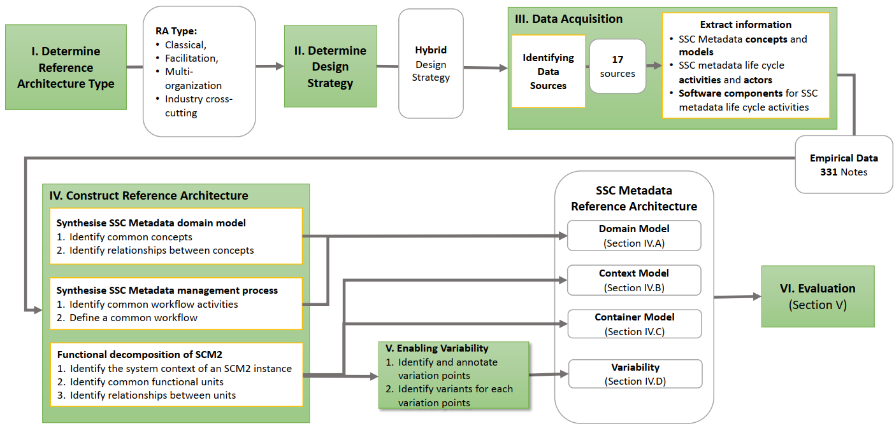

With the rapid rise in Software Supply Chain (SSC) attacks, organisations need thorough and trustworthy visibility over the entire SSC of their software inventory to detect risks early and identify compromised assets rapidly in the event of an SSC attack. One way to achieve such visibility is through SSC metadata, machine-readable and authenticated documents describing an artefact's lifecycle. Adopting SSC metadata requires organisations to procure or develop a Software Supply Chain Metadata Management system (SCM2), a suite of software tools for performing life cycle activities of SSC metadata documents such as creation, signing, distribution, and consumption. Selecting or developing an SCM2 is challenging due to the lack of a comprehensive domain model and architectural blueprint to aid practitioners in navigating the vast design space of SSC metadata terminologies, frameworks, and solutions. This paper addresses the above-mentioned challenge by presenting an empirically grounded Reference Architecture (RA) comprising of a domain model and an architectural blueprint for SCM2 systems. Our proposed RA is constructed systematically on an empirical foundation built with industry-driven and peer-reviewed SSC security frameworks. Our theoretical evaluation, which consists of an architectural mapping of five prominent SSC security tools on the RA, ensures its validity and applicability, thus affirming the proposed RA as an effective framework for analysing existing SCM2 solutions and guiding the engineering of new SCM2 systems.
Our methodology was developed based on the systematic design approach proposed by Galster and Avgeriou and comprised six steps
@misc{tran2023reference,
title={Toward a Reference Architecture for Software Supply Chain Metadata Management},
author={Nguyen Khoi Tran and Samodha Pallewatta and M. Ali Babar},
year={2023},
eprint={2310.06300},
archivePrefix={arXiv},
primaryClass={cs.CR}
}